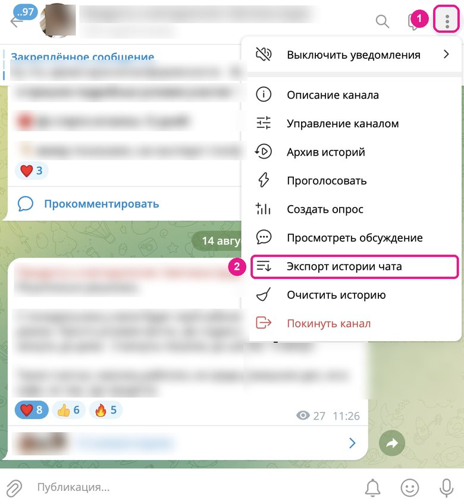

Навык настолько хорош, насколько хорош материал
Нейросеть собирает навык из того, что вы ей принесли. Принесли общие слова – получите общий навык. Принесли свои тексты, свои чек-листы и свои удачные примеры – навык будет работать под вас.
Хорошая новость: почти всё нужное у вас уже есть. Посты, переписки, голосовые, рабочие документы – осталось достать их и сложить в одно место.
Первая часть страницы – о том, где взять материал. Вторая – 20 идей, какие навыки собрать после «Моего голоса», и с какой фразы начать разговор с Конструктором помощников.
Как выгрузить свои тексты для навыка
Пять источников – от самого удобного к самому ручному. Не нужно собирать всё сразу: для первого навыка хватит одного-двух.
Канал или чат в Телеграме
Самый быстрый способ, если вы регулярно пишете в Телеграм: одна выгрузка – и все ваши тексты за период в одном файле. Это тот же экспорт, что в уроке 2.
- Откройте Telegram Desktop на компьютере. В приложении на телефоне такой выгрузки нет.
- Зайдите в свой канал или чат и нажмите значок с тремя точками в правом верхнем углу – на картинке это цифра 1.
- Выберите «Экспорт истории чата» – цифра 2.
- В окне экспорта снимите галочки с фото, видео и файлов – нужен текст. Голосовые можно выгрузить тоже, если хотите их потом расшифровать. Формат – JSON, период – лучше с первого сообщения, если история у вас есть.
- Телеграм сохранит файл на компьютер. Выглядит он страшно, но внутри – все ваши тексты, даже с реакциями. Его можно целиком прикрепить в чат с нейросетью.

Выгружаете личную переписку или рабочий чат – в файл попадут и сообщения других людей. Для навыка голоса нужны только ваши, а чужие данные лучше вообще не отдавать нейросети. Об этом – в разделе «Что не грузить».
Посты из ВКонтакте, Инстаграма, с сайта, из рассылки
Здесь проще всего скопировать руками, чем разбираться с выгрузками. Выберите 10–20 своих лучших постов – тех, где вы звучите как вы, – и сложите в один документ.
- Откройте свою страницу и пролистайте публикации. Берите не подряд, а те, что нравятся вам самим.
- Копируйте текст поста целиком в один документ. Между постами – пустая строка. Даты и заголовки можно оставить, оформлять и причёсывать ничего не нужно.
- Сохраните документ и прикрепите его в чат, когда будете собирать навык.
У некоторых соцсетей в настройках аккаунта есть запрос копии своих данных – архив приходит на почту. Но для навыка обычно быстрее выбрать лучшие посты руками. Инстаграм – соцсеть, запрещённая в России.
Письма и переписки
Ответы клиентам, письма партнёрам, развёрнутые сообщения подписчикам. В переписке меньше всего «режима автора» и больше всего живого языка – особенно ценно, если публичных текстов у вас мало.
- Выберите 10–20 своих сообщений и писем под задачу навыка: для голоса – живые, для навыка «Тон ответов клиентам» – ответы клиентам.
- Оставьте только свои реплики. Чужие удалите.
- Обезличьте: уберите имена, телефоны, адреса, суммы, названия компаний и всё, по чему можно узнать человека. Делайте это до того, как отправляете текст в нейросеть, – руками или поиском с заменой в документе.
Голосовые, эфиры, подкасты
Ваша живая речь – вторая половина навыка «Мой голос». Голосовые подругам, эфиры, записи выступлений: всё, где вы говорите свободно, а не читаете по бумажке. Сначала их нужно перевести в текст – как это сделать и что потом делать с расшифровкой, разобрано в бонусе «Транскрибация: из голоса и видео в текст».
Рабочие документы и уроки
Для навыков-процессов, стандартов и инструментов нужен не голос, а ваш способ работать. Он часто уже записан: в чек-листах, регламентах, шаблонах, методичках, уроках, удачных отчётах и коммерческих предложениях.
- Найдите 2–5 документов, которыми вы довольны, – «вот так у меня правильно».
- Если есть – добавьте свой чек-лист или список шагов. Если нет – ничего страшного, нейросеть вытащит его из вас вопросами.
- Перед загрузкой уберите из документов данные клиентов и всё конфиденциальное.
Сколько и какого
Какой материал работает лучше всего
Живое и своё
Тексты, которые писали вы. Тексты, которые вы писали вместе с нейросетью и сильно правили под себя, – тоже подойдут. А вот тексты, которые ИИ написал за вас и вы их почти не трогали, не берите: навык выучит ИИ-штампы, а не вас.
Разное, но под одну задачу
Несколько форматов в пределах того, для чего нужен навык: для голоса в блоге – посты, ответы подписчикам и голосовые. А вот официальные письма лучше оставить для отдельного навыка: если смешать всё, навык потеряет точность.
Достаточно, но не гора
Для голоса обычно хватает 30–40 постов или около часа свободной речи. Для навыка-процесса или инструмента – ваш чек-лист и 2–5 примеров хорошего результата. Больше – не всегда лучше: длинный материал нейросеть начинает читать по диагонали. Много материала – отдавайте частями.
Хорошее и плохое
Кроме удачных примеров, принесите пару таких, где «вот так не надо», и скажите, что именно не нравится. Из сравнения получаются конкретные правила, а не общие слова.
Осторожно
Что не грузить
Всё, что вы вставляете в чат или прикрепляете файлом, лучше считать вышедшим из ваших рук. Поэтому:
- Чужие персональные данные. Имена, телефоны, адреса, диагнозы, суммы, фото документов клиентов – убираем до загрузки.
- Клиентские документы без обезличивания. Договоры, анкеты, медицинские и финансовые документы клиентов. Нужен пример – обезличьте или соберите учебный.
- То, что вы обязались не разглашать. Документы работодателя, материалы под соглашением о конфиденциальности, внутренние цифры компании.
- Пароли, доступы, номера карт. Ни в каком виде – даже внутри скриншота.
- Чужие тексты под видом своих. Для навыка голоса они просто вредны: голос получится не ваш.
Сомневаетесь насчёт куска – не берите его. Навык почти никогда не держится на одном конкретном документе.
20 идей навыков
Как в уроке 2, навыки бывают трёх типов: процессы – как вы что-то делаете по шагам, стандарты – каким должен быть результат, инструменты – готовые форматы и шаблоны. Ниже по 6–7 идей каждого типа: для кого, что делает навык, какой материал принести и готовая фраза, чтобы начать.
Не собирайте всё подряд. Выберите один навык – тот, что вы объясняете нейросети чаще всего. Скопируйте фразу, вставьте в чат с Конструктором помощников и отвечайте на его вопросы – лучше голосом. Как установить готовый навык из архива – в уроке 2.
Навыки-процессы
01 – 0701Разбор заявки клиента
Психологи, юристы, косметологи, дизайнеры – все, кто получает заявки и решает, как на них ответить.
По тексту заявки выделяет запрос, недостающие данные и «красные флаги», предлагает уточняющие вопросы и черновик ответа.
Ваши шаги разбора своими словами, 3–5 обезличенных заявок с вашими ответами, список того, что для вас настораживает.
Фраза для Конструктора помощников
Я хочу создать навык-процесс «Разбор заявки клиента». Я [кто вы и с кем работаете]. Когда приходит заявка, я обычно смотрю на [что для вас важно в заявке]. Помоги собрать навык: задавай вопросы по одному, скажи, какие примеры заявок и моих ответов тебе нужны, и в конце собери навык одним архивом, чтобы его можно было скачать.
02Подготовка к консультации
Консультанты, коучи, психологи, нутрициологи, юристы, наставники.
По анкете или переписке собирает короткую карточку клиента, план встречи и вопросы, которые стоит задать.
Структуру вашей консультации, вашу анкету, пример подготовки, которой вы довольны.
Фраза для Конструктора помощников
Я хочу создать навык-процесс «Подготовка к консультации». Я провожу [какие консультации и для кого]. Перед встречей я обычно [как вы готовитесь сейчас]. Хочу, чтобы навык по анкете или переписке с клиентом собирал карточку клиента, план встречи и вопросы. Что тебе нужно от меня? Спрашивай по одному вопросу, а в конце собери навык одним архивом.
03Проверка договора по чек-листу
Юристы, бухгалтеры, фрилансеры и предприниматели, которые регулярно подписывают типовые договоры.
Проходит договор по вашему чек-листу, отмечает пункты, которые не совпадают с вашими правилами, и формулирует вопросы к другой стороне. Помогает не пропустить важное, но не заменяет юриста.
Ваш чек-лист проверки, типовые спорные пункты, обезличенный договор с вашими пометками.
Фраза для Конструктора помощников
Я хочу создать навык-процесс «Проверка договора по чек-листу». Я [кто вы], обычно проверяю договоры [какие: с клиентами, с подрядчиками, аренды]. Вот на что я смотрю: [пункты вашего чек-листа или как вы проверяете своими словами]. Помоги превратить это в навык, который проходит договор по шагам и отмечает расхождения. Задавай вопросы по одному, в конце собери навык одним архивом.
04Сбор контент-плана
Блогеры, эксперты, СММ-специалисты, все, кто ведёт свой канал.
Собирает контент-план на неделю или месяц по вашим рубрикам, целям и ближайшим событиям – запуску, эфиру, акции.
Ваши рубрики, цели канала, план, который у вас сработал, ограничения: сколько постов в неделю вы реально пишете.
Фраза для Конструктора помощников
Я хочу создать навык-процесс «Сбор контент-плана». Я веду [где: Телеграм-канал, блог, страницу] для [кого]. Мои рубрики: [перечислите или скажите, что их пока нет]. Пишу [сколько] постов в неделю. Помоги собрать навык, который составляет контент-план по моему подходу. Скажи, какие примеры тебе принести, задавай вопросы по одному и в конце собери навык одним архивом.
05Аудит урока или курса
Методисты, авторы курсов, преподаватели, наставники онлайн-школ.
Проходит урок, программу или лендинг курса по вашим критериям и выдаёт замечания с примерами, что поправить.
Ваши критерии аудита, пример разобранного урока с вашими замечаниями, типичные ошибки, которые вы ловите.
Фраза для Конструктора помощников
Я хочу создать навык-процесс «Аудит урока или курса». Я [кто вы], провожу аудит [чего: уроков, программ, курсов целиком]. Сейчас моя технология живёт в голове: [расскажите своими словами, на что вы смотрите и в каком порядке]. Помоги оцифровать её в навык. Задавай вопросы по одному, скажи, какие примеры принести, и в конце собери навык одним архивом.
06Начало работы с новым клиентом
Специалисты на долгих проектах: дизайнеры, маркетологи, бухгалтеры, наставники, репетиторы.
Ведёт по вашим шагам старта: приветственное письмо, анкета, что запросить у клиента, план первых встреч.
Ваши шаги старта, шаблоны писем и анкет, частые вопросы клиентов в начале работы.
Фраза для Конструктора помощников
Я хочу создать навык-процесс «Начало работы с новым клиентом». Я [кто вы и с кем работаете]. Когда появляется новый клиент, я делаю так: [шаги своими словами, можно сумбурно]. Помоги собрать навык, который проводит меня по этим шагам и готовит письма и анкеты в моём формате. Спрашивай по одному вопросу, в конце собери навык одним архивом.
07Из созвона – в задачи и договорённости
Все, у кого много созвонов: с клиентами, командой, подрядчиками.
По расшифровке встречи собирает договорённости, задачи со сроками и ответственными и письмо-итог участникам.
Обезличенную расшифровку одной встречи, формат итога, который вам удобен, пример хорошего письма после встречи.
Фраза для Конструктора помощников
Я хочу создать навык-процесс «Из созвона – в задачи». После встреч с [кем: клиентами, командой] мне нужно [что: список задач, письмо-итог, обновить план]. Сейчас я делаю это вручную так: [как]. Помоги собрать навык, который по расшифровке встречи выдаёт итог в моём формате. Задавай вопросы по одному, скажи, какой пример расшифровки принести, в конце собери навык одним архивом.
Навыки-стандарты
08 – 1408Мой голос для официальных текстов
Тем, кто на уроке собрал голос для блога, а пишет ещё и письма, статьи, профессиональные тексты.
Второй голос – деловой: как вы звучите в письмах партнёрам, в статьях, в официальной переписке. Отдельно от голоса для блога, чтобы оба работали точно.
10–20 ваших писем и профессиональных текстов, примеры «так я не пишу», ваши «да» и «нет».
Фраза для Конструктора помощников
Я хочу создать второй навык-стандарт «Мой голос для официальных текстов». Навык «Мой голос» для блога у меня уже есть, а этот нужен для [писем партнёрам, статей, официальной переписки]. Я принесу свои тексты. Помоги собрать навык так, чтобы он не путался с голосом для блога. Что тебе нужно от меня? Спрашивай по одному вопросу, в конце собери навык одним архивом.09Тон ответов клиентам
Мастера, студии, онлайн-школы, специалисты, которые много переписываются с клиентами.
Держит единый тон: на «вы» или на «ты», как вы извиняетесь, как отказываете, как напоминаете об оплате, чего никогда не обещаете.
10–20 ваших удачных ответов клиентам (обезличенных), пару неудачных, фразы, которые вы не используете.
Фраза для Конструктора помощников
Я хочу создать навык-стандарт «Тон ответов клиентам». Я [кто вы], клиентам пишу в [мессенджере, почте, соцсетях]. Мне важно, чтобы ответы были [какими: тёплыми, короткими, без заискивания]. Я принесу свои обезличенные ответы. Помоги вынуть из них правила: как я обращаюсь, отказываю, напоминаю, чего не пишу. Спрашивай по одному вопросу, в конце собери навык одним архивом.
10Стандарт оформления документов
Бухгалтеры, юристы, методисты, HR, все, у кого документы должны выглядеть одинаково.
Знает ваши правила: структуру, заголовки, нумерацию, обязательные блоки, как оформлять даты и суммы. Собирает документ по ним и проверяет готовый.
1–3 образцовых документа без реальных данных, ваши правила оформления, требования организации, если они есть.
Фраза для Конструктора помощников
Я хочу создать навык-стандарт «Оформление моих документов». Я готовлю [какие документы: отчёты, справки, методички, письма]. У меня есть образцы, как должно быть. Помоги вынуть из них правила оформления и собрать навык, который оформляет документы по ним и проверяет готовые. Скажи, какие образцы тебе нужны, задавай вопросы по одному и в конце собери навык одним архивом.11Правила моей методики
Авторы методик, тренеры, нутрициологи, психологи, преподаватели – все, у кого есть свой подход.
Следит, чтобы ответы и материалы не противоречили вашему подходу: ваши принципы, термины, что вы рекомендуете, а чего у вас «так не делают».
Описание методики своими словами, ваши уроки или статьи о ней, список «мы так не делаем».
Фраза для Конструктора помощников
Я хочу создать навык-стандарт «Правила моей методики». Я [кто вы], работаю по своему подходу: [опишите его в двух-трёх фразах]. Хочу, чтобы нейросеть в любом чате опиралась на мои принципы и не советовала то, что моей методике противоречит. Помоги собрать навык: задавай вопросы по одному, скажи, какие материалы принести, в конце собери навык одним архивом.
12Стандарт учебного материала
Методисты, преподаватели, эксперты, которые делают уроки, гайды и задания.
Знает, каким должен быть ваш урок или гайд: структура, длина, как формулировать задания, что обязательно в конце. Собирает материалы по этому стандарту.
1–2 эталонных урока или гайда, требования площадки, ваши правила для заданий.
Фраза для Конструктора помощников
Я хочу создать навык-стандарт «Мой учебный материал». Я делаю [уроки, гайды, задания] для [кого]. Хороший материал у меня выглядит так: [что в нём обязательно есть]. Я принесу эталонные примеры. Помоги собрать навык, по которому нейросеть делает материалы в этом стандарте. Спрашивай по одному вопросу, в конце собери навык одним архивом.
13Мой словарь терминов
Эксперты в нишах со своим языком: медицина и красота, право, финансы, психология, IT для новичков.
Следит, чтобы вещи назывались одинаково и понятно: какие термины вы используете, какие заменяете простыми словами, каких слов избегаете.
Список ваших терминов с объяснениями, слова-исключения, пару текстов, где термины использованы правильно.
Фраза для Конструктора помощников
Я хочу создать навык-стандарт «Мой словарь терминов». Я работаю в [ниша], пишу для [кого: коллег, клиентов-новичков]. Мне важно, чтобы термины везде назывались одинаково, а сложные слова объяснялись так, как объясняю я. Помоги собрать навык: задавай вопросы по одному, скажи, в каком виде принести список терминов, в конце собери навык одним архивом.
14Что я не обещаю: этика и оговорки
Психологи, косметологи, нутрициологи, тренеры, финансовые консультанты – все, кому нельзя обещать лишнего.
Проверяет тексты на обещания результата, утверждения, которые нельзя делать в вашей профессии, и добавляет нужные оговорки.
Ваши профессиональные правила и ограничения, требования площадок, примеры формулировок «так можно – так нельзя».
Фраза для Конструктора помощников
Я хочу создать навык-стандарт «Что я не обещаю». Я [кто вы], и в моей профессии есть то, что нельзя обещать и утверждать: [перечислите, что знаете]. Хочу, чтобы навык проверял мои тексты и ответы клиентам на такие места и предлагал честные формулировки. Помоги собрать навык: задавай вопросы по одному, в конце собери навык одним архивом.
Навыки-инструменты
15 – 2015Еженедельный отчёт
Сотрудники, руководители, фрилансеры, которые отчитываются перед клиентом или командой.
Из ваших заметок, списка дел или наговора собирает отчёт в одном и том же формате: что сделано, что в работе, где риски, какая нужна помощь.
Шаблон отчёта, 1–2 отчёта, которыми вы довольны, требования того, кто отчёт читает.
Фраза для Конструктора помощников
Я хочу создать навык-инструмент «Еженедельный отчёт». Я отчитываюсь перед [кем] каждую [неделю, две недели]. Отчёт должен быть в таком формате: [разделы или «покажу на примере»]. Хочу наговаривать или скидывать заметки, а получать готовый отчёт. Помоги собрать навык: что тебе нужно от меня? Спрашивай по одному вопросу, в конце собери навык одним архивом.
16Коммерческое предложение по шаблону
Фрилансеры, агентства, эксперты, которые отправляют предложения после разговора с клиентом.
По вашим заметкам о клиенте собирает предложение по вашей структуре: задача клиента, что вы сделаете, этапы, сроки, ваши пакеты.
Ваше лучшее предложение, описание пакетов и условий, частые вопросы клиентов перед покупкой.
Фраза для Конструктора помощников
Я хочу создать навык-инструмент «Коммерческое предложение по моему шаблону». Я [кто вы], продаю [услуги]. После разговора с клиентом у меня есть заметки, а нужно предложение в моём формате. Я принесу своё лучшее предложение и описание пакетов. Помоги собрать навык: задавай вопросы по одному, в конце собери навык одним архивом.
17Карточка товара или услуги
Мастера, магазины, продавцы на маркетплейсах, эксперты с линейкой услуг.
Пишет описание по единому шаблону: для кого, что входит, какой результат, сколько длится, какие ограничения. С учётом требований площадки.
3–5 удачных карточек, требования площадки к длине и формату, слова, которых избегаете.
Фраза для Конструктора помощников
Я хочу создать навык-инструмент «Карточка товара или услуги». Я продаю [что] на [где: сайт, маркетплейс, соцсети]. Хорошая карточка у меня выглядит так: [что в ней должно быть]. Я принесу удачные примеры. Помоги собрать навык, который пишет карточки по этому шаблону. Спрашивай по одному вопросу, в конце собери навык одним архивом.
18Таблица учёта с моими столбцами и формулами
Все, кто ведёт учёт: клиентов, записей, оплат, расходов, заказов.
Из сырых данных собирает таблицу в вашем формате – с нужными столбцами, формулами и итогами – и объясняет, где что посчитано.
Вашу таблицу-образец без реальных данных, список нужных итогов, где вы ведёте таблицы.
Фраза для Конструктора помощников
Я хочу создать навык-инструмент «Моя таблица учёта». Я веду учёт [чего] в [Excel, Google Таблицах, другом]. Мне нужны столбцы [какие] и итоги [какие: сумма за месяц, долги, средний чек]. Я принесу образец без реальных данных. Помоги собрать навык, который делает таблицы в этом формате. Спрашивай по одному вопросу, в конце собери навык одним архивом.
19Анкета или бриф для клиента
Дизайнеры, маркетологи, нутрициологи, организаторы, все, кто перед работой собирает информацию.
Под конкретную услугу собирает анкету или бриф с вашими вопросами – не длиннее, чем клиент готов заполнить.
Ваши анкеты, вопросы, которые вы всегда задаёте устно, то, что клиенты обычно забывают сообщить.
Фраза для Конструктора помощников
Я хочу создать навык-инструмент «Анкета для клиента». Я [кто вы], перед работой мне нужно узнать у клиента [что]. Услуги у меня разные: [перечислите]. Хочу, чтобы навык собирал анкету под конкретную услугу из моих вопросов. Я принесу свои анкеты. Помоги собрать навык: задавай вопросы по одному, в конце собери навык одним архивом.
20Памятка для клиента
Косметологи, мастера, тренеры, репетиторы, консультанты – все, кто даёт клиенту инструкции «до» и «после».
Превращает ваши объяснения в короткую памятку единого вида: что делать, чего не делать, когда обращаться к вам.
Ваши памятки или то, что вы обычно объясняете устно, формат: сообщение в мессенджер, PDF, карточка.
Фраза для Конструктора помощников
Я хочу создать навык-инструмент «Памятка для клиента». Я [кто вы], клиентам часто объясняю [что: как подготовиться, как ухаживать после, как выполнять задание]. Хочу получать памятки в одном виде – [формат]. Я принесу свои объяснения и примеры. Помоги собрать навык: задавай вопросы по одному, в конце собери навык одним архивом.
Своей идеи нет в списке
Найти свой навык
Лучший следующий навык – тот, который вы объясняете нейросети снова и снова. Если не получается сразу его назвать, спросите у самой нейросети: она видит ваши задачи со стороны.
Найти следующий навык
Я хочу понять, какой навык мне собрать следующим. Я [кто вы и чем занимаетесь]. Вот задачи, которые я регулярно объясняю нейросети заново: [перечислите, можно сумбурно]. Если видишь наши прошлые чаты, посмотри и их. Помоги разобраться: что из этого процесс, что стандарт, а что инструмент. Предложи один навык, который сэкономит мне больше всего времени, и объясни почему. Не предлагай больше трёх вариантов.
Что сделать сегодня
Выберите одну идею. Соберите для неё материал из части А – хватит одного источника. Откройте чат с Конструктором помощников, вставьте фразу и отвечайте на вопросы.
Один навык, который работает, полезнее десяти, установленных на всякий случай.